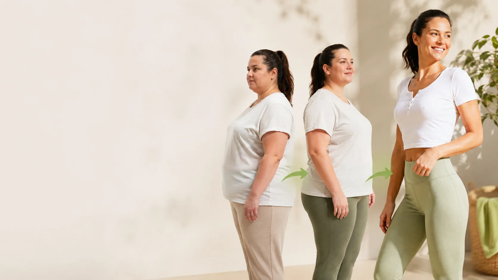

{{#unless partner_modus=duo}} {{/unless}}
{{#if partner_modus=duo}}
{{/unless}}
{{#if partner_modus=duo}}
 {{/if}}
{{#unless partner_modus=duo}}{{vorname}} {{nachname}}{{/unless}}{{#if partner_modus=duo}}{{vorname}} & {{vorname2}}{{/if}}
{{/if}}
{{#unless partner_modus=duo}}{{vorname}} {{nachname}}{{/unless}}{{#if partner_modus=duo}}{{vorname}} & {{vorname2}}{{/if}}

Du stellst dein Essen um und nimmst dazu ausgewählte Nährstoffe. Kein Hexenwerk. Aber ein Nährstoffkonzept, das im Körper wirklich ankommt.You adjust the way you eat and add carefully chosen nutrients. Nothing fancy. Just a nutrient concept that actually reaches the body.
Hochwertige Vitalstoffe aus einem patentierten Konzept. Nicht aus dem Supermarktregal.High-quality nutrients from a patented concept. Not off the supermarket shelf.
Kein Snacken zwischendurch, kein Weglassen. Klare Struktur, satt bis zum nächsten Mal.No snacking in between, no skipping. Clear structure, full until the next meal.
In der Kernphase bewusst verzichten. Kein Fasten, kein Hunger, nur eine Weile weglassen.In the core phase, you consciously leave them out. No fasting, no going hungry, just a break for a while.
In der Aktivierungsphase orientierst du dich am Prinzip der ketogenen Ernährung. Klingt kompliziert, ist es aber nicht: ähnliches Prinzip wie klassisches Keto, nur ohne extreme Fett-Löffel und ohne ständigen Verzicht.In the activation phase you follow the principle of a ketogenic diet. Sounds complicated, but it isn't: the same idea as classic keto, just without spoons of pure fat and without constant restriction.
Fachbegriff für diesen Zustand: Ketose. Deshalb heißt es auch „ketogene Ernährung".The technical term for this state: ketosis. That's why it's also called a "ketogenic diet".
Das sind die Rückmeldungen, die immer wieder kommen. Klar, jeder Körper reagiert anders.This is the feedback that keeps coming back. Of course, every body reacts differently.

Von morgens bis abends. Ohne dass der Kaffee die Hauptrolle spielt.From morning to night. Without coffee doing all the heavy lifting.

Bessere Konzentration und mehr Fokus, wenn du sie brauchst.Better concentration and sharper focus when you need it.

Kein Ziehen nach unten mehr. Du merkst wieder, dass dein Körper mit dir arbeitet, nicht gegen dich.No more being weighed down. You notice again that your body is working with you, not against you.

Der Morgen fühlt sich anders an. Weniger schwerfällig, mehr sofort da.Mornings feel different. Less sluggish, more instantly there.

Kein ständiges Denken ans nächste Essen. Kein Nasch-Zwang um drei. Wird einfach leiser.No constant thinking about the next meal. No 3pm sugar cravings. It just quiets down.

Was du in den Phasen lernst, nimmst du in den Alltag mit.What you learn in the phases, you take with you into everyday life.
Klingt nach dem was du suchst? {{#unless partner_modus=duo}}Ich erklär{{/unless}}{{#if partner_modus=duo}}Wir erklären{{/if}} dir alles.Sounds like what you're after? {{#unless partner_modus=duo}}I'll walk{{/unless}}{{#if partner_modus=duo}}We'll walk{{/if}} you through it.
Kurz mit {{#unless partner_modus=duo}}{{vorname}}{{/unless}}{{#if partner_modus=duo}}uns{{/if}} schreibenMessage {{#unless partner_modus=duo}}{{vorname}}{{/unless}}{{#if partner_modus=duo}}us{{/if}} →In vier klaren Phasen von Woche 1 bis in deinen dauerhaften Alltag.Four clear phases, from week one all the way into your long-term routine.
Im Programm ist jeder Tag entweder weiß, grün oder rot. Die Farbe verrät dir sofort, was heute auf den Teller kommt. Kein Grübeln, kein Rechnen.In the programme every day is either white, green or red. The colour tells you right away what goes on the plate. No thinking, no counting.
Nur Eiweiß, gute Fette und die Shakes. Auch kein Gemüse. Klingt strikt, gehört aber zur Kernphase dazu.Only protein, good fats and the shakes. Not even vegetables. Sounds strict, but it's part of the core phase.
Wie ein weißer Tag, plus Gemüse und Salat. Der Standard-Tag im Programm.Like a white day, plus vegetables and salad. The standard day in the programme.
Wochenende, Feier, Geburtstag. An diesen Tagen darfst du essen was du willst. Aber halt nicht jeden Tag.Weekend, party, birthday. On these days you eat whatever you want. Just not every day.
Zahlreiche vielfältige Rezepte, auch für Vegetarier geeignet. Es geht nicht um schnellen Gewichtsverlust durch Hungern, sondern um bewusste Ernährung.Lots of varied recipes, vegetarian-friendly too. It's not about quick weight loss through starving, it's about eating with awareness.
Rezepte anfragenAsk for recipes →


Wir nutzen bewusst das FitLine-Produktkonzept. Grund: gutes Essen allein reicht oft nicht. Was du zusätzlich brauchst, muss auch wirklich im Körper ankommen.We deliberately use the FitLine product concept. The reason: good food alone often isn't enough. What you add on top needs to actually reach your body.

Häkchen setzen. Wir schauen gemeinsam, ob und wie das zu dir passt.Tick the boxes. We'll figure out together if and how this fits you.
So viel wie ein Kaffee mit Croissant. Nur dass du dafür 3 Monate lang deine Ernährung komplett umstellst, statt nur kurz wach zu werden.About what you'd pay for a coffee and a croissant. Except this time you're resetting your nutrition for 3 months instead of just waking up for an hour.
{{#unless partner_modus=duo}}Bei mir{{/unless}}{{#if partner_modus=duo}}Bei uns{{/if}} sogar noch günstiger.Often even less through {{#unless partner_modus=duo}}me{{/unless}}{{#if partner_modus=duo}}us{{/if}}.